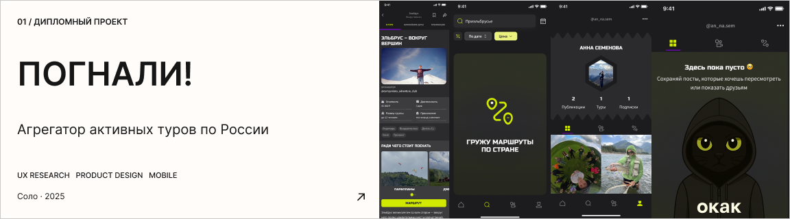

01 / ДИПЛОМНЫЙ ПРОЕКТ
ПОГНАЛИ!
Агрегатор активных туров по России
Я продуктовый дизайнер с бэкграундом
в математике, экономике и анализе данных.
После нескольких лет работы актуарием
я решила сменить профессию и окончила
магистратуру по продуктовому дизайну
Ищу первую роль продуктового
дизайнера
в команде крупного
цифрового продукта
Смотреть резюме ✶
Связаться в telegram ✶
2025
Ассистент курса «UI-мастерская», ИТМО
Сопровождала студентов младших курсов магистратуры: модерировала встречи, помогала преподавателям проверять задания и давать обратную связь. Работа на курсе помогла мне систематизировать собственные знания и глубже погрузиться в UI-дизайн.
2021–2024
Актуарий, Сбер Страхование
Работала с базами данных в SQL, рассчитывала страховые тарифы и собирала аналитические модели. Постепенно стала всё больше внимания уделять тому, как представить сложные расчёты понятно и наглядно.
Со временем ко мне стали обращаться за графиками и презентациями команды из разных отделов. В том числе я готовила материалы для генерального директора, которые он использовал в выступлениях перед правлением Сбера.
2023–2025
Магистратура по направлению «Инноватика», ИТМО
Здесь я погрузилась в продуктовый дизайн и прошла весь путь от исследований и поиска идеи до создания интерактивного прототипа. Выпускным проектом стало приложение для поиска туров по России, которое я спроектировала самостоятельно.
2018–2022
Бакалавриат по направлению «Экономика», РЭУ им. Г. В. Плеханова
Профиль «Цифровая экономика». Научилась строить прогнозы, анализировать большие объемы данных и работать со статистическими показателями. Хорошо понимаю возможности количественных методов. И узнала на практике, что далеко не всё важное можно посчитать.
2021
Академический обмен, Университет Констанца
Во время ковидных ограничений... Научилась быстро адаптироваться к новым условиям, прокачала английский язык und ein bisschen Deutsch. Влюбилась в Баухаус.
и причем тут Ньютон?
Сколько себя помню, меня всегда привлекали визуальный порядок и продуманная подача. Ещё не зная, как это называется, я разглядывала рекламу и оформление книг, изучала интерфейсы и пыталась понять, почему одними вещами пользоваться удобно и приятно, а другими — нет.
В продуктовом дизайне меня зацепил сам процесс: заметить проблему, разобраться, чего хотят люди, и придумать решение, которое будет одновременно полезным и жизнеспособным. Я много лет живу в окружении айтишников, и в какой-то момент мне стало мало наблюдать за созданием цифровых продуктов со стороны. Теперь очень хочется нырнуть в эту работу с головой.
Почему именно продуктовый дизайн?
01 / Мечта 14-летней Ани
Ханса Циммера я люблю ещё с юношества. Недавно специально отправилась с друзьями в евротур ради его концерта. А чтобы полностью растворяться в такой музыке, я увлеклась коллекционированием винила.
02 / Путешествия, горы и мосты
Я побывала более чем в 50 странах, но за перезагрузкой всегда возвращаюсь на Кавказ. Швейцарию люблю за дизайн для людей, поезда и горы, а самым красивым городом мира считаю Петербург, хотя родилась в Москве. Живу в Питере и не представляю места для жизни лучше!
ОЧЕНЬ ХОЧЕТСЯ НЫРНУТЬ
В НОВУЮ РАБОТУ
С ГОЛОВОЙ

03 / Ньютон — это мой корги!
Получил своё имя за свои необычайно умные глаза, которыми разговаривает лучше некоторых людей.
Ещё Ньютон знает тысячу и один способ поворчать.
Компанию ему составляют две замечательные морские свинки: пугливая Зоя и любопытная Миша. Мы все очень разные, но живём удивительно дружно.

Ищу первую роль продуктового
дизайнера в команде крупного
цифрового продукта